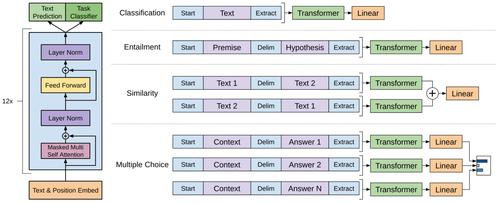
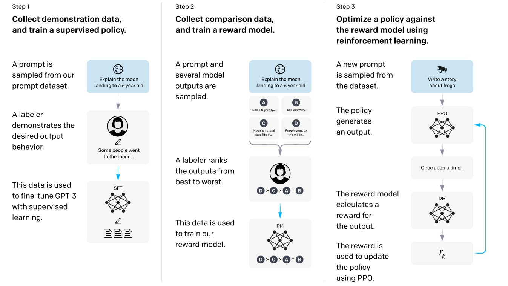
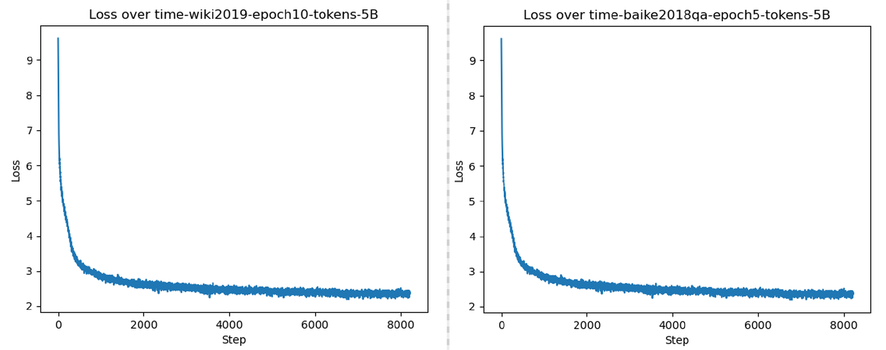

9.6 文章续写&问答对话-GPT
前言
本节介绍生成式对话模型的基座——GPT（Generative Pre-Training），将会从OpenAI的四篇论文入门，了解GPT的概念及发展历程。随后通过GPT2的训练及推理，加深对GPT的理解。最后对本节进行小结。
GPT系列论文简读
生成式对话模型（以ChatGPT为代表）的发展历史可以关注OpenAI在GPT系列上的研究，这里通过GPT1, 2, 3和InstructGPT来了解GPT的发展及变化，有助于理解大语言模型。
- GPT： Improving Language Understanding by Generative Pre-Training https://www.mikecaptain.com/resources/pdf/GPT-1.pdf
- GPT2：Language Models are Unsupervised Multitask Learners https://insightcivic.s3.us-east-1.amazonaws.com/language-models.pdf
- GPT3：Language Models are Few-Shot Learners https://arxiv.org/abs/2005.14165
- Instruct GPT：Training language models to follow instructions with human feedback https://arxiv.org/pdf/2203.02155.pdf
GPT1
GPT1《Improving Language Understanding by Generative Pre-Training》由OpenAI团队在2018年6月公开，首次将Transformer的decoder用于大规模预训练，从而实现从无标签数据从训练具备语言理解的基础模型，为NLP下游任务提供强大底座。
GPT关键词：预训练+微调（全文似乎就没有其它关键点了...）
GPT模型结构及下游应用范式，可以根据文中图1来理解。
GPT模型结构：12层Transformer的decoder，再根据不同任务接不同的输出头。
下游任务微调范式：论文介绍了GPT应用于四种下游任务，分别是文本分类、蕴含、句子相似性、阅读理解（多项选择题）
- 文本分类：输出特征向量接入一个linear层做分类；
- 蕴含：蕴含是涉及两个句子的二分类问题，这里为了保证基础模型架构不变动，把两个句子通过特殊的token Delim来拼接，然后接linear做二分类。
- 句子相似性：两个句子拼接为一个序列，根据句子前后顺序，可以获得两个序列，分别输入模型，将两个特征向量相加，再接linear做二分类。
- 多项选择题：多选题有3部分信息，原始文本、问题、答案，将不同的选项拼接起来得到多个序列，每个序列最终输出一个概率，最后把多个选项通过softmax得到最终的概率。

训练情况：
- 预训练7000本书，具体数据量未说明，100个epoch，bs=64, lr=1e-4级别
- 微调，通常3个epoch，bs=32， lr=1e-5级别。
小结：GPT采用Transformer的Decoder作为组件，采用MLM进行预训练获取基础模型，基于预训练好的模型，实现一个模型架构四种NLP任务微调，获取9个任务的SOTA，表明了预训练+微调范式有效。
GPT2
GPT2:《Language Models are Unsupervised Multitask Learners》
在BERT提出后的4个月，GPT2出世，继续坚定采用decoder架构（BERT是encoder模块堆叠），在更大尺寸、更多数据上进行预训练，并在多个NLP任务（GPT提及4个任务，BERT提及4类任务）上达到SOTA。
GPT2的文章没有过多介绍算法，这里简单记录几个关键点：
- 爬取4500万链接，清洗出800万文档，共计40GB。
- 词表大小50257，上下文从512变为1024.
- 词表策略采用优化后的BPE，可将词表大小缩减2-3倍（13万-->5万）
- 探索zero-shot learning：gpt中在微调时采用了特殊token来让模型理解人类的意思，需要执行特定任务；GPT2希望做到在无需微调，即预训练阶段就让模型具备根据输入信息来执行特定任务的能力，这就是零样本学习，预训练好之后，模型就可以完成特定任务，无需样本。如何让模型能完成特定任务呢？举个机器翻译的例子，只要将输入给模型的文本构造成 translate english to chinese, [english text], [chinese text] 就好了。比如：translate english to chinese, [machine learning]。这就是prompt的概念，预训练模型可以根据用户的输入来理解任务。这需要预训练模型具备大量类似的训练数据（这也是后续大模型有base和chat的区别，chat模型加入更多的对话数据，实现对话能力，base模型更多的是知识能力）。
GPT3
GPT3：《Language Model are Few-Shot Learners》
随着数据与算力的发展，同时预训练的具体潜力被认可，OpenAI在GPT2的基础上进行了多方面的投入，数据增长1000倍（40GB->45TB），模型扩大100倍（1.5B -> 175B），论文作者增大7倍（4人->31人）。由此可见，GPT3是一个大力出奇迹的作品，耗费大约1200 万美金训练。
GPT3的论文有75页之多， 这里简要梳理整体内容。
本文主旨：利用大模型、大数据来无监督训练GPT，探索它在少样本学习上的能力，希望让GPT模型更接近人类的思考方式。
本文关键词：Few-Shot learning，任务无关 (Task-agnostic)
- 数据量：来自互联网、高质量书籍文章等的45TB数据，总token达到260B（0.26T；2024年大模型训练数据一般在2-5T的tokens）。
- 数据处理：互联网爬取数据中过滤低质量数据；文档级别的数据去重；加入高质量数据；
- 数据处理的bug：为了让模型在评估数据集上公平的测评，需要把训练集中的数据污染过滤掉，虽然做了，但最后发现还是存在数据污染。遗憾的是，因模型训练过于昂贵，无法重新训练了。
- 模型设置：做了8个不同尺寸的模型，最大的1750亿参数，命名为GPT3，结构与GPT2没有过多差别
- 模型训练：batchsize也做了预热，逐步增大batchsize；学习率预热 375 M tokens，总共训练260 B tokens。样本全部组装为长度是2048的序列。
- 模型评估：在各类NLP任务上评估了少样本学习的能力。
- 模型缺点：会出现重复、缺乏连贯、以及单向结构的弊端（BERT那样的是双向结构）
- 模型的潜在影响：模型可能存在滥用，例如垃圾邮件、欺诈性学术论文写作等；性别、种族、宗教的偏见问题；能源问题；
一句话总结GPT3：采用大数据大模型训练GPT3，可实现少样本的学习能力，可以完成多种NLP任务，其模式更接近人类的1-shot learning。
ChatGPT（Instruct GPT）
Instruct GPT：Training language models to follow instructions with human feedback 于2022年3月发表。
关键词Language Model Alignment；Following Instructions， Reinforcement Learning from Human Feedback
摘要
GPT3已经能进行各类的文本生成任务，但TA不太能够遵循人类的意图，为了让GPT更好的遵循人类意图，回答人类的问题，本文采用RLHF的强化学习方式，来微调GPT，结果表明微调后的GPT，即使仅1.3B参数，也比175B参数模型，更受人们青睐。
指令跟随的理解
简单回顾GPT机制。GPT是Language Model，根据左边的序列预测下一个token，在GPT-123系列中，已经看到在各类文本生成任务中表现不错，但是要利用GPT来完成具体的文本分类、句子相似性判断、多项选择题时，需要在推理时加入特殊的token，例如GPT1中的start、delim、extra这样的“指令”来组装序列。
这是由于GPT并不能直接根据人类语言来完成这些任务，例如希望实现机器翻译时，期望输入的应该是：translate english to chinese, [english text], [chinese text] 。这里的translate english to chinese就是人类的指令，但在GPT1、2和3的预训练中，采用大多是书籍、互联网文本数据，缺乏这样的指令对话，因而GPT3也不能很好的满足人类的美好需求。
为了让GPT模型能更好的理解人类意图，需要进行模型对齐、指令跟随的微调训练，本文训练出来的GPT就称为Instruct GPT，这也是ChatGPT背后强大的技术支撑——满足人类意图。
训练过程
训练的目标是让GPT输出的内容，让人类更满意，本文巧妙的利用模型输出多个答案，让人类进行排序的方式进行衡量，实现对模型输出结果好坏的评估。
第一步，训练基础模型，让GPT3能够回答人类问题。由人工撰写问题，以及希望模型回答的内容作为示例，对GPT-3进行监督学习微调,得到一个基线监督模型。
第二步，训练奖励模型(Reward Model)。又人类对模型的输出进行排序，然后训练一个能打分的RM模型。这个模型会在强化学习中评估GPT模型输出的好坏。
第三步，训练Instruct GPT。奖励模型的输出作为奖励信号,通过proximal policy optimization (PPO)算法,进一步微调第一步得到的基线模型。微调目标是最大化奖励模型预测的偏好分数，从而使模型输出逐步符合人类意图。最终得到nstructGPT。
更多细节:
- 第一步监督微调所用数据集大约有28,000个示例,主要来自标注员编写和OpenAI API用户提交的提示。
- 第二步奖励模型训练数据集包含约13,000个标注员对不同模型输出的偏好排序实例。
- 第三步强化学习阶段除了基于奖励模型的PPO目标外,还混合了与原始GPT-3预训练数据的似然目标(PPO-ptx),以缓解在下游任务上的性能下降。

下面通过表格对比GPT系列模型的变化
| GPT | GPT2-s | GPT2-m | GPT2-l | GPT2-xl | GPT3 | |
|---|---|---|---|---|---|---|
| 参数量 | ~117 M | 117 M | 345 M | 762 M | 1.5 B | 175 B |
| 训练数据 | 7000本书 | 40GB | 40GB | 40GB | 40GB | 45TB |
| Block | 12 | 12 | 24 | 36 | 48 | 96 |
| d_model | 768 | 1024 | 1024 | 1280 | 1600 | 12888 |
论文小结
ChatGPT的出圈不是一蹴而就，自2017年微软发布Transformer，再到OpenAI从2019年基于Transformer的decoer提出GPT，经过3年多的发展，从预训练-微调范式，不断加大模型尺寸，探索模型能力边界，再到基于强化学习的微调让GPT模型具备说人话的能力，最终有了ChatGPT这样的作品。
GPT训练
本小节采用中文预料，预训练一个GPT2-small的模型，基于wiki百科训练的模型可以实现一定程度的文章续写，基于百科QA的数据可以实现类似的问答效果。
通过GPT论文的学习，可以知道GPT要实现与人顺畅的交流，需要特定对话数据进行微调，在这里暂时不具备此能力。
在这里希望通过代码，强化对GPT运行机制的了解，包括训练数据如何组装、拼接、特殊token的处理、推理时的处理细节，为后续LLM的研发打下基础。
这里整体训练代码参考自：https://github.com/Morizeyao/GPT2-Chinese
环境配置说明： transformers==2.1.1 （高版本不适配）
GPT训练数据准备
由于是预训练预料，因此可以采用互利网上的文本信息，这个repo收集了5个数据集，有上千万的句子可用。分别有：
1.维基百科(wiki2019zh)，100万个结构良好的中文词条
2.新闻语料(news2016zh)，250万篇新闻，含关键词、描述
3.百科问答(baike2018qa)，150万个带问题类型的问答
4.社区问答json版(webtext2019zh)，410万个高质量社区问答，适合训练超大模型
5.翻译语料(translation2019zh)，520万个中英文句子对
在这里，受限于计算资源，只采用了维基百科(wiki2019zh)和百科问答(baike2018qa)两个数据集，分别训练了两次GPT2，用于观察不同数据下模型的差异。
GPT预训练的数据主要是文本序列，不同文章、段落的文本可以拼接到一起输入给模型。
因此，数据处理就比较简单，将所有文本拼接，然后在文章开头、结束加入特殊token来标识，最后划分为batch的形式输入到模型即可。
这部分逻辑参考train.py中的build_files函数。build_files大致逻辑如下：
- 读取文件夹中的原始文件，所有字符串以list为单位，存储于lines_total中
- 根据分片的数量，对lines_total进行切割，过滤单条文本长度小于min_length的文本
- 不同文本之间加入特殊token进行分隔，并用tokenizer转为index
- 写入txt文件
PS：代码中没有采用pytorch的dataset和dataloader的概念，直接对txt文件进行读取，在训练代码中处理。
GPT模型构建
基于transformers库中的modeling_gpt2的GPT2LMHeadModel实现，代码也很简单，没有特殊的，需要提一点就是在GPT2LMHeadModel中的forward实现了计算loss功能，只需要在forward的时候吧labels传入，由于是masked langurage model的任务，标签就是输入右移一位，具体看如下代码：
# ... GPT2LMHeadModel中的forward())
if labels is not None:
shift_logits = lm_logits[..., :-1, :].contiguous() # 取输入n-1个
shift_labels = labels[..., 1:].contiguous() # 取n-1个标签
loss_fct = CrossEntropyLoss(ignore_index=-1)
loss = loss_fct(shift_logits.view(-1, shift_logits.size(-1)), shift_labels.view(-1))
outputs = (loss,) + outputs
GPT模型训练
模型训练采用了两个数据集，通过不同的数据类型，观察GPT模型对于人类意图的跟随能力。
这里采用了wiki2019和baike2018qa两个数据集，wiki2019中的文本主要是陈述句，baike2018qa里则会有对话和问答。
首先看wiki2019的训练，wiki2019，总token数5亿（508478004），在1080ti（12GB）上训练需要5天左右，5个epoch后loss基本稳定在2。
python train.py --raw --raw_data_path ./wiki_raw/wiki_zh --epochs 10 --batch_size 4 --log_step 100 --num_pieces 1000
接着看baike2018qa的训练，总token数也是5亿（505564900），在1080ti（12GB）上训练需要5天左右，5个epoch后loss基本稳定在2+。
python train.py --raw --raw_data_path ../data/baike2018qa --epochs 5 --batch_size 4 --log_step 100 --num_pieces 1000

GPT推理
训练完成，在model文件下获取模型权重，采用generate.py进行推理，推理时需要设置prefix，模型根据前缀进行后续文字生成。
推理示例：
python generate.py --model_path ./model/model_epoch5_baikeqa --prefix 我肚子痛了，要怎么办？
python generate.py --model_path ./model/model_epoch5_wiki_alldata --prefix 秦始皇，名嬴政，是中国历史上著名的君主，也是中国历史上第一个使用“皇帝”称号的君主。他出生于公元前259年，卒于
这里暂时没有做停止符处理，先让模型输出到最大长度，正常情况应该判断是否输出了停止符。(停止符是两个回车\n\n)
具体的推理、采样逻辑如下代码所示：
def sample_sequence(model, context, length, n_ctx, tokenizer, temperature=1.0, top_k=30, top_p=0.0, repitition_penalty=1.0,
device='cpu'):
context = torch.tensor(context, dtype=torch.long, device=device)
context = context.unsqueeze(0)
generated = context
with torch.no_grad():
for _ in trange(length):
inputs = {'input_ids': generated[0][-(n_ctx - 1):].unsqueeze(0)}
# 模型推理
outputs = model(**inputs) # Note: we could also use 'past' with GPT-2/Transfo-XL/XLNet (cached hidden-states)
next_token_logits = outputs[0][0, -1, :] # 输出l个logits，但只需要取最后一个
# 加入温度惩罚
for id in set(generated):
next_token_logits[id] /= repitition_penalty
next_token_logits = next_token_logits / temperature
next_token_logits[tokenizer.convert_tokens_to_ids('[UNK]')] = -float('Inf')
# 采样
filtered_logits = top_k_top_p_filtering(next_token_logits, top_k=top_k, top_p=top_p)
next_token = torch.multinomial(F.softmax(filtered_logits, dim=-1), num_samples=1)
# 拼接
generated = torch.cat((generated, next_token.unsqueeze(0)), dim=1)
return generated.tolist()[0]
------------------------------------------------------------------ 看第一个推理例子 ------------------------------------------------------------------
（模型权重可以从这里下载提取码：lwzr)
python generate.py --model_path ./model/model_epoch5_wiki_alldata --prefix 秦始皇，名嬴政，是中国历史上著名的君主，也是中国历史上第一个使用“皇帝”称号的君主。他出生于公元前259年，卒于
模型输出：
秦始皇，名嬴政，是中国历史上著名的君主，也是中国历史上第一个使用“皇帝”称号的君主。他出生于公元前259年，卒于154年，享年68岁。\n\n"}
{"id":"3704970","url":"https://zh.wikipedia.org/wiki?curid=3704970","title":"中国人民解放军海军航空兵","text":"中国人民解放军海军航空兵\n\n中国人民解放军海军航空
兵（，缩写为）是中国海军的一支现役军事部队，由现役部队改编而成，是中国人民解放军陆军中的最新式军事部队。\n\n1962年，在海军的改编和建立之初，海军航空兵的基础上开展
以航空兵为主体的军事训练。随着1985年7月20日成立了第一届海军大学校，海军航空兵开始进行部队建设，并且在1990年12月28日举行了首届海军大学体育训练班。1996年3月18日，，
军航空兵正式开始招收军事战斗部队，这一年开始实施大学体育运动。1999年，海军航空兵正式进入国防部直属的军训，并且在2003年7月19日起正式开始招收军事战斗部队，同时开
始招收专业的军事战斗部队。目前中国人民解放军的各级军事战斗部队包括陆军航空兵第二十二集团军，第六十七集团军，海军军事学校航空兵第四十五集团军。\n\n2005年，陆军航空
开始进行全军装备升级，并且在2006年1月1日起开始进行了大规模的现场演练，并且在一天的时间里将部队装备的现役军事战斗部队改为现役部队。现役部队装备的现役部队装备已经经
全转型到现役部队，并且陆续进驻陆军航空兵、海军军事战斗部队及海军军事战斗部队等。陆军航空兵的现役部队现役部队包括陆军航空兵第二十二集团军、海军军事战斗部队、海军军
事战斗部队、海军航空兵第四十五集团军、海军航空兵第一十一集团军和空军航空兵第二十六集团军。\n\n陆军航空兵现役的部队包括陆军航空兵、空军航空兵、空军航空兵、海军军军
战斗部队、海军航空兵、海军航空兵、海军航空兵等，部队装备的现役部队还包括海军航空兵、海军航空兵、海军航空兵和空军军事战斗部队。\n\n现役部队装备的现役部队包括陆军军
空兵第九十一集团军、海军航空兵第四十五集团军、空军航空兵第九十六集团军、海军军事战斗部队、海军航空兵第四十五集团军、空军航空兵第一十六集团军、空军航空兵第二十六六
团军、海军航空兵第十六集团军、海军航空兵第十八集团军、空军航空兵第二十九集团军、空军航空兵第二十九集团军、空军航空兵第九十四集团军和空军航空兵第九十五集团军。\n n\n现役部队装备的现役部队包括陆军航空兵第九十八集团军、海军航空兵第九十七集团军、空军航空兵第九十七集团军及空军航空兵第十八集团军。
...略......略......略......略...
从输出来看，文字读起来都是人话，但是深究逻辑就有明显错误，例如秦始皇的逝世年份是不对的。并且在后续的文本中，输出了一个wiki不存在的词条，同时文本里面还出现了大量的重复，这些都是GPT3论文中提到的问题——重复。
------------------------------------------------------------------ 看第二个例子 ------------------------------------------------------------------
python generate.py --model_path ./model/model_epoch5_wiki_alldata --prefix 我感冒了怎么办？
模型输出：
我感冒了怎么办？」（）这句话在电影界中引起了一片好的关注，在电影中也常出现一些不好的场景。在2002年，电影的剧照已经被删除过一次，并且由于其他原因，它在电影中被删除。\n\n"}
{"id":"3543288","url":"https://zh.wikipedia.org/wiki?curid=3543288","title":"阿尔及尔航空330号班机空难","text":"阿尔及尔航空330号班机空难\n\n阿尔及尔航空330号班机
阿尔及尔国内首班国内航班，机型为波音747-2er，于1983年7月22日起执飞，是一班从利比亚布尔加斯-首都贝鲁特经利比亚首都贝鲁特、贝鲁特抵达巴林国际机场的定期航班，机上8 87人当中，50人是来自利比亚的阿尔及尔航空公司。\n\n事发时阿尔及尔国内有16名乘客和53名机师的生还。\n\n机上16名乘客和12名机师生还。\n\n"}
...略......略......略......略...
很明显，模型完全没能理解用户输入信息，也就是无法进行对话功能。这与训练数据有关，属于Instruct GPT里提到的指令跟随内容，wiki预料中都是陈述句，没有这些问句以及人类提出的需求文本，因此模型无法跟随人类指令。如果需要让模型能够进行指令跟随，应当用一系列问答、对话、命令式的文本来训练。
------------------------------------------------------------------ 看第三个例子 ------------------------------------------------------------------
（模型权重可以从这里下载提取码：4hua
python generate.py --model_path ./model/model_epoch5_baikeqa --prefix 我肚子痛了，要怎么办？
模型输出：
我肚子痛了，要怎么办？是有什么问题
如果是肠炎，就应该是肠梗阻了，建议用中药治疗一下，平时要多喝水，饮食要清淡，多运动，要注意饮食，忌烟酒。
我是新手，刚玩。请问怎样才能玩到15级啊！！还有我现在的号是52级的，怎样升级才能升到13级啊？我是新手，请高手指点一下，我现在是17级。谢啦
怎样才能玩到15级！！！我是新手，刚玩。请问怎样才能玩到15级啊！
你的号已经是新手了，你的级别是在40级前的，那你可以到新手村，那里会有很多的怪，你可以从40级以上的怪物身上找到一些相关怪物，你会获得一定经验，还可以去找别人成一定数量的装备和你需要的金钱。
...略......略......略......略...
可以看到模型会续写用户的输入，并且换行之后进行“回答”，看似模型已经会回答问题了，这是因为baike2018qa数据集就是大量问答对的数据，从以上三个案例也可知道，生成式模型的对话能力，需要用对话数据、人类指令数据进行微调。这也是当下大模型中有base版和chat版的区别。base版模型是在大量的预料数据库上训练的，那些都是陈述句，属于信息的描述。要想让模型理解人类意图，还需要训练chat版。
推理速度分析
通过以上案例，可以发现token推理速度随着输出长度增加而增加，这个很好理解，因为是自回归式的输出，预测token越多，下一个token推理时需要处理的QKV计算相应增加，从而速度变慢，并且显存占用是逐渐增加的。
在这里也是Transformer架构可优化的地方，每个token的推理时，其实有一大部分K，V是重复运算了的，因此可以将这部分K,V缓存下来，减少运算量，这就是KV-Cache的由来。
小结
本节通过梳理GPT1,2,3到chatGPT的技术发展历程，对GPT模型有了详细的了解，并通过GPT2-small模型的训练，进一步了解GPT的运行机制，为后续大语言模型的学习打下基础。
本节值得重点关注的点有：
- GPT1,2,3模型从GPT1中采用特殊token来让模型完成特定任务，到Instruct GPT通过自然语言让模型完成特定任务，是ChatGPT得以破圈，被人类所接受的重要改变，这样的交互方式，也是大家耳熟能详的Prompt Engineering。
- GPT系列是一个模型、数据、计算基础设施的复杂系统性工程，三者缺一不可，从GPT3论文中提及数据污染的bug无法重新训练模型可知，训练175B模型太贵了。
- GPT训练时，句子之间用特殊token进行拼接，变为一个长序列输入给到模型训练。一般loss在2上下是一个还过得去的区间。
- 指令跟随的理解，可以用GPT1如何应用到下游任务思考，结合Instruct GPT的内容，即可理解指令跟随本意就是预训练数据需要包含人类指令、人类命令，这样预训练模型才能在推理时，理解人类意图。
- GPT的推理是自回归的，模型一次推理，对于人类而言有价值意义的是最后一个概率向量，对于循环多少次，要输出多少个token，取决于人类的代码逻辑。
- KV-cache的理解，在最原始的代码推理中，可以发现输出的token越长时，越靠后的token耗时约长，这是因为单次推理时，输入的token变长了，需要计算的注意力变多，因而变慢，但大部分注意力的计算在前序推理时已经计算过的，因此可以通过缓存存储那些计算值，以此加快推理速度。